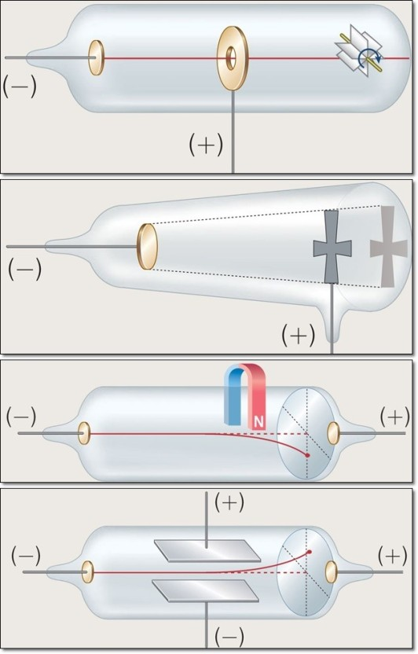
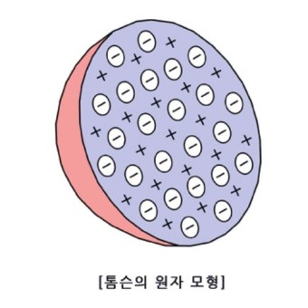

영국의 물리학자 조세프 존 톰슨은 음극선실험을 통하여 전자를 발견하게된다.
음극선실험: 톰슨이 1897년에 전자를 발견할 수 있게 한 실험이다. 크룩스관 양쪽에 전압을 걸어주면 음극선(전자의 흐름)이
나온다. 음극선관을 이용하여 톰슨은 4가지의 실험을하여 음극선의 정체를 밝히게 된다.
1. 음극선이 흐를 때, 바람개비가 돌아갔다.
2. 음극선을 물체에 쏘았을 때, 그림자가 생겼다.
3. 음극선에 자석을 댔을 때, 음극선이 휘었다.
4. 음극선에 전기장을 걸어주었을 때, 음극선이 휘었다.
 이 실험을 통해 톰슨은 음극선에 대한 사실을 알 수 있었다.
1. 음극선은 직진하는 성질을 가지고있다.
2. 음극선은 질량을 가진 입자이다.
3.음극선은 -전하(음전하)를 띄고있다.
이후 톰슨은 음전하에 전자라는 이름을 붙였다.
1904년 톰슨은 음극선실험 이후 돌턴의 원자모형을 수정하였다. 원자는 단지 알갱이 형태만으로 이루어져있는 것이 아닌,
양전하와 음전하가 머핀처럼 박혀있는 형태라고 생각했다.(양전하와 음전하의 개수는 같다.)
